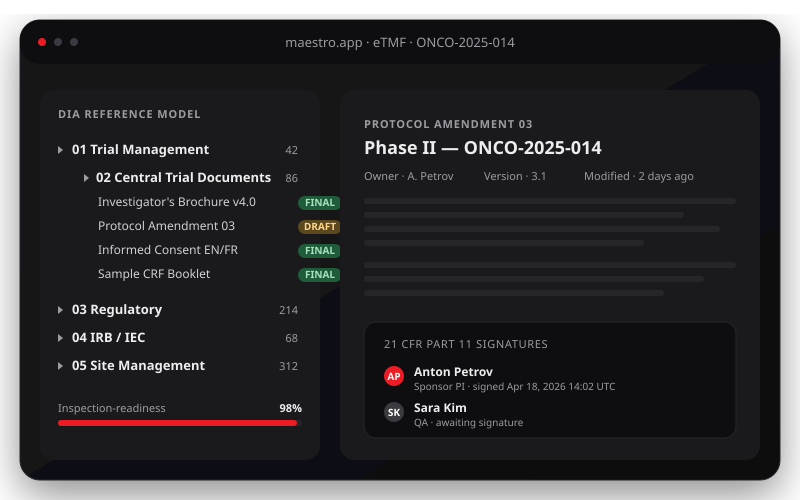
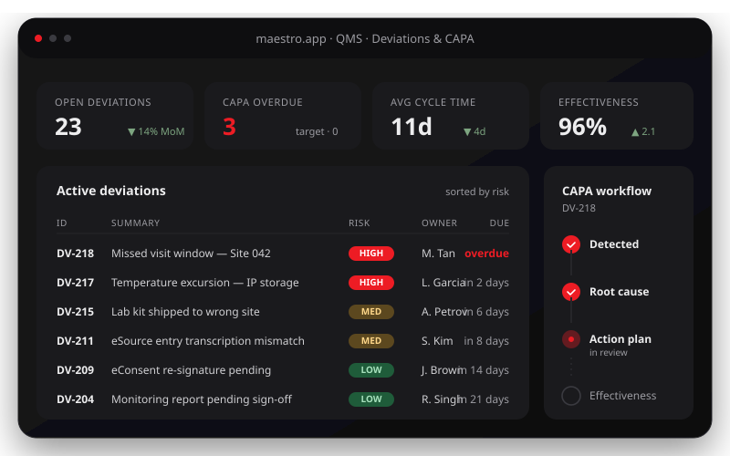
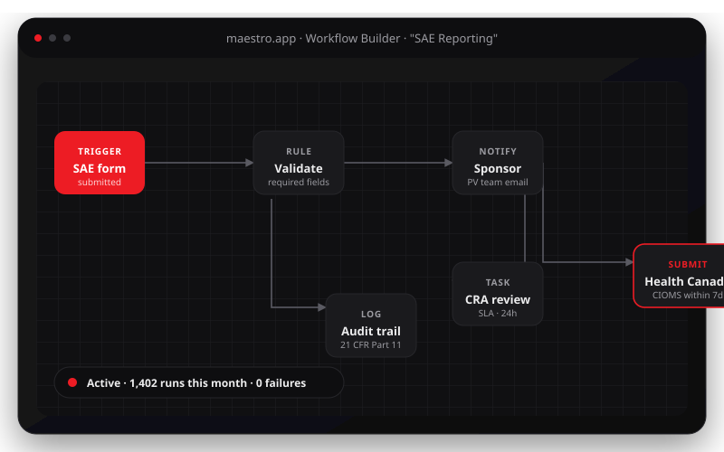
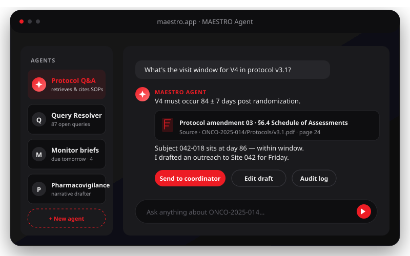
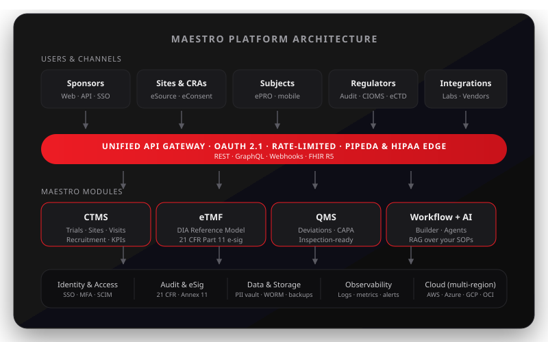

Eliminate data silos
One source of truth across CTMS, eTMF, QMS & workflows. No more reconciling spreadsheets between teams.


MAESTRO unifies CTMS, eTMF, QMS, intelligent workflows and AI agents — eliminating data silos so your scientists focus on discovery, not on stitching tools together.
Cloud agnostic — deployable on every major provider
Stop choosing between fragmented point-tools and rigid suites. MAESTRO gives you composable modules that share a unified data layer, AI core, and audit trail.
One source of truth across CTMS, eTMF, QMS & workflows. No more reconciling spreadsheets between teams.
AI generates, classifies and validates docs — cutting manual effort by up to 60% while improving accuracy.
Continuous checks against FDA, EMA and ICH guidelines with real-time regulatory updates and full audit trails.
Plan, execute and monitor every stage of the trial lifecycle — with predictive analytics to prevent bottlenecks.
Real-time monitoring automates quality event detection, root cause analysis and CAPA for full GxP compliance.
Turn fragmented trial data into AI-powered insights and customizable dashboards your team will actually use.
Industry-leading modules combined with AI-powered workflows. Start with what you need, expand as you grow.
Streamlined management of every aspect of your clinical trials — from study setup to financials.

AI-powered trial documentation that’s always inspection-ready.

Comprehensive quality control and compliance — built into your daily workflows.

Streamline operations with smart, no-code automation across modules.

Specialized agents for the repetitive, error-prone tasks slowing your team down.

Automated processing and templates slash documentation overhead.
Streamlined workflows accelerate trial initiation processes.
AI-powered validation ensures near-perfect compliance.
Automate routine tasks so teams focus on innovation.
Unify all research operations in a single platform.
Continuous monitoring and analytics for better decisions.
Deploy where regulation, cost and geography demand.
One unified data layer across CTMS, eTMF and QMS.
Our platform integrates AI with rigorous data management for a comprehensive solution that adapts to your needs.

Specialized models for document processing, NLP, anomaly detection and analytics — continuously learning while staying compliant.
Centralized repository that maps relationships between trials, documents, quality events and metrics — killing silos for good.
Pre-built connectors, REST APIs and adapters for clinical data standards with comprehensive audit trails out of the box.
Choose the provider, region and topology that fits your regulatory, cost and geographic constraints — without vendor lock-in.
Pick the cloud provider that best meets your regulatory, cost and geographic requirements.
Comply with regional data regulations by selecting the appropriate cloud regions.
Operate seamlessly across public cloud, private cloud and on-premises environments.
From startups to enterprise programs — pick the engagement that matches your stage.
For biotech and early-stage companies
For universities and research centers
For large pharmaceutical companies
Contact our team to design a tailored implementation that meets your specific research requirements.
Request a custom proposalMAESTRO was created by RAN BIOLINKS CANADA, a company founded by scientists with extensive clinical and research experience who recognized a critical problem in the industry: fragmented tools creating artificial data silos.
While numerous solutions exist in the market, we observed that their separation is primarily driven by business models rather than scientific needs. This fragmentation forces researchers to make difficult choices — either invest in multiple disconnected systems or sacrifice essential capabilities due to budget constraints.
Our philosophy is fundamentally different. We believe clinical scientists deserve a unified ecosystem where all tools work seamlessly together, allowing them to focus on breakthrough discoveries rather than managing disjointed software. MAESTRO embodies this vision — combining traditionally separate systems into one cohesive platform that puts scientists first.
MAESTRO doesn’t replace your team. It removes the duct-tape between Word docs, spreadsheets, EDCs and email — so each role can spend their time on the work only they can do.
Protocol & medical strategy
Designs protocols that survive ethics review and stand up to amendments. Wants prior-study answers in seconds — not weeks of digging through SharePoint.
Health Canada, FDA, EMA filings
Builds CTA dossiers and ICH-aligned submissions. Needs every document version-controlled, signed, and traceable — not scattered across email and shared drives.
Portfolio planning & vendors
Plans timelines, vendors and budgets across a portfolio of trials. Wants one live dashboard for every study, every site — not seventeen weekly status calls.
Site delivery & patient care
Treats patients and runs the study at the site. Wants admin work — visit windows, queries, source data — to disappear so clinical focus stays on people.
Site operations, day to day
Holds the site together: visits, queries, source docs, IP accountability. Needs shortcuts that never break GCP — and a system that doesn’t require triple data entry.
Remote & on-site monitoring
Monitors a portfolio of sites. Wants pre-visit briefs auto-prepared, deviations surfaced before they grow, and report time cut in half.
Audit readiness & compliance
Owns audit readiness. Needs every action timestamped, signed and reproducible — so when an inspector arrives, the answer is one click away, not a week of prep.
Safety, SAEs & narratives
Owns the SAE clock. Needs structured cases, regulator-ready narratives drafted in minutes, and an audit trail proving every step was on time.
From PIPEDA and Health Canada to ICH E6 R3 and bilingual Quebec studies — the questions Canadian sponsors, CROs and academic centres ask us most.
MAESTRO is a Canadian-built, AI-powered clinical trials platform that unifies CTMS, eTMF, QMS, workflow automation and AI agents in one system. It is designed around Health Canada regulations (GUI-0104, GUI-0029), PIPEDA and provincial privacy laws (PHIPA in Ontario, Loi 25 in Quebec, HIA in Alberta), and ICH E6 R3 Good Clinical Practice — making it a fit-for-purpose alternative to legacy Veeva and Medidata stacks for Canadian sponsors and CROs.
Yes. MAESTRO can be deployed in Canadian regions of AWS, Microsoft Azure, Google Cloud, Oracle Cloud, IBM Cloud and DigitalOcean. Personal information is processed in accordance with PIPEDA and applicable provincial laws (PHIPA, Loi 25, HIA), with audit logging, role-based access and breach-notification workflows built in.
Yes. The eTMF and QMS modules are pre-configured with the document types, sectional structures and quality records required for Health Canada CTAs and amendments. Workflows trigger required reviews, e-signatures and notifications so submission-ready bundles can be exported on demand.
Yes. MAESTRO provides 21 CFR Part 11 e-signatures, audit trails and computer system controls, and is designed against ICH E6 R3 principles (risk-based quality management, sponsor oversight, data integrity) — with validation packages (IQ/OQ/PQ) aligned to GAMP 5 available to customers.
MAESTRO is a unified, modular alternative built for Canadian and mid-market sponsors. Instead of stitching together multiple enterprise tools, you get CTMS + eTMF + QMS + workflow + AI agents in one platform — at a fraction of enterprise pricing, with Canadian data residency and bilingual (English / French) support.
Yes. MAESTRO offers academic-discount pricing for university hospitals, research institutes and the Clinical Trials Ontario / 3CTN ecosystem, and provides simplified workflows for investigator-initiated and Phase I–IV studies.
Yes. MAESTRO’s UI, document templates and workflow notifications support English and Canadian French, in line with Quebec’s Loi 25 and the language-of-work requirements common to Quebec-based research sites.
Most Canadian customers go live within 4–8 weeks. Implementation includes data migration, validation evidence (IQ/OQ/PQ aligned with GAMP 5), Health Canada-aware configuration and team training in English and French.